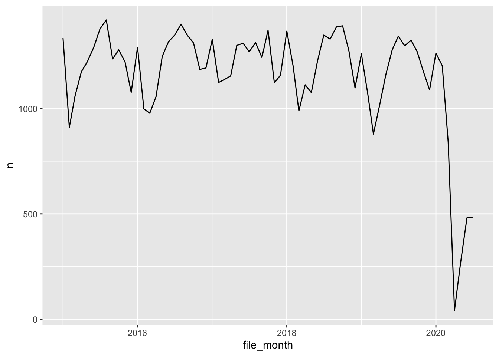
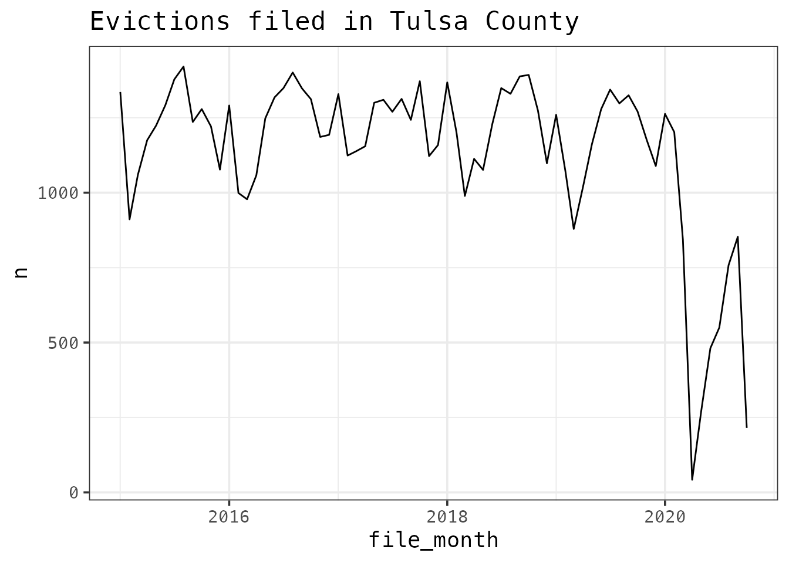
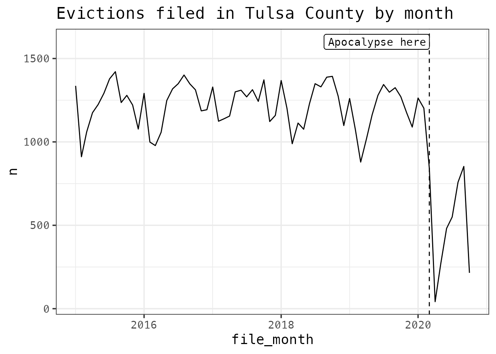
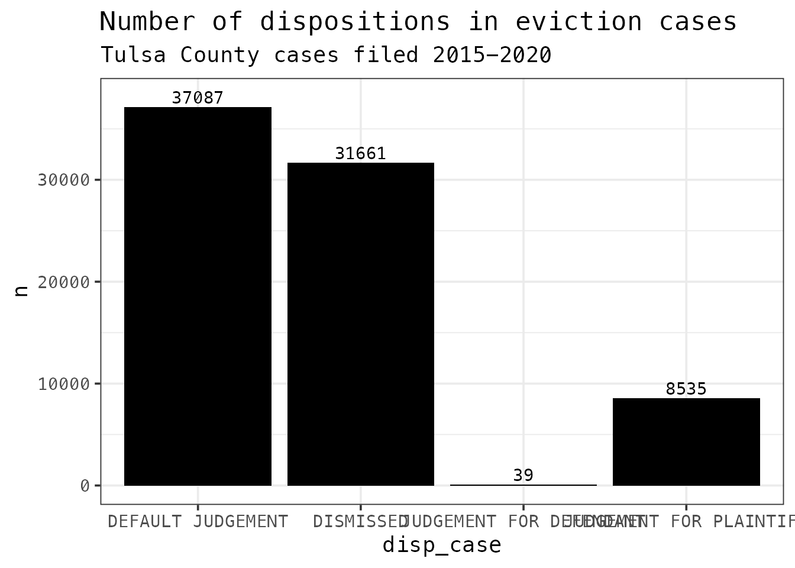
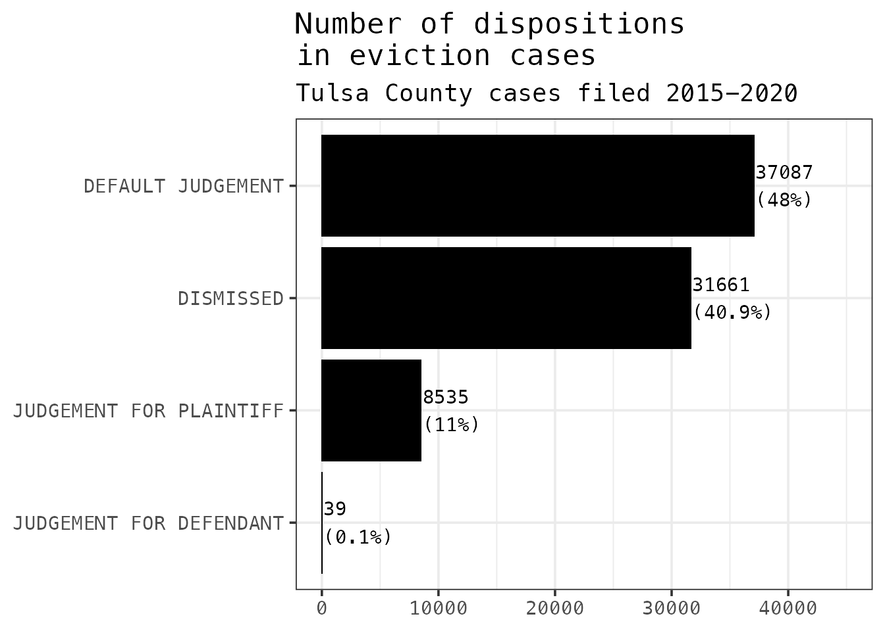

Getting Started
getting-started.RmdThe workflow for an analyst will typically follow the model outlined in R for Data Science:

The ojodb package is here to make those first two steps - Import and Tidy - easy for you. This document will cover those two steps and the Transform and Visualize portions of the Understand cycle, which is where analysts will spend most of their time.
First things first
As you start a script, you’ll want to load the ojodb package and connect to the database.
library(ojodb) connect_ojo()
Import: Get some data
Most of the tables in the OJO database are very big: often hundreds of thousands of rows and dozens of columns. To avoid bringing entire unwieldy tables, we can limit the data we bring in by identifying the table we want with ojo_tbl(), filter()ing it to the subset we’re interested in, then collect()ing it into R.
Remember: to get help with a function in R, you can type
?{function_name}, e.g.?floor_date. This works for any function, including those in the ojo package.
The ojo_civ_cases table contains data collected from OSCN and ODCR and summarized to the case level, so there is (or should be) one row for every case for which we have data. We can see the variables by running:
ojo_list_vars("ojo_civ_cases") #> [1] "court" "casenum" "casetype" "file_year" "file_date" #> [6] "close_date" "judge" "plaintiff" "defname" "issue" #> [11] "disp_date" "disp_case" "summary_date" "iss_desc"
Let’s take a look at small claims eviction data in Tulsa County over the last five years. To do that, we will:
- Identify the table (“ojo_civ_cases”) with
ojo_tbl() - Narrow the query using logical expressions within
filter(). Remember to use the double “==” for logical expressions and the single “=” to assign values to variables. - Bring the data into R using
collect()
d <- ojo_tbl("ojo_civ_cases") %>% filter(court == "TULSA", file_year >= 2015, issue == "EVICTION", casetype == "SC") %>% collect()
To see how many rows we have in the data we got, we can run:
nrow(d) #> [1] 77694
Over 77,000 cases and counting! That’s a good sample to work with.
One other piece of preparation: when pulling from the database, dates are formatted as character strings rather than dates. We can convert all date variables to dates by running:
d <- d %>% mutate(across(ends_with("_date"), ymd))
Transform and Visualize
The data stored in the OJO database, imperfect as it is, is already “tidy” according to the principles outlined in R for Data Science. You can read more about what makes tidy data easier to work with there.
That means the next step in our process is transforming and visualizing. This is the fun part of data analysis, where you explore the data, come up with hypotheses for why things are they way they are, and test those hypotheses.
First, let’s look at the number of cases filed each month during this time period. There’s no variable for the month of filing yet, but when we listed variables above, there was a field called file_date that contains the date that the case was filed in court. So to get the number of cases filed each month, we need to do two things:
- Use
mutate()to create a new variablefile_monthwith the month and year of filing - Count the number of cases filed in each month
month_filings <- d %>% mutate(file_month = floor_date(file_date, "month")) %>% count(file_month)
That gives us a summarized data frame with one line for each month and a variable n with the number of evictions filed. Now we can make a simple line graph:
ggplot(month_filings, aes(x = file_month, y = n)) + geom_line()

Now let’s pretty it up a little bit by adding theme_ojo() and giving it a title with ggtitle():
ggplot(month_filings, aes(x = file_month, y = n)) + geom_line() + theme_ojo() + ggtitle("Evictions filed in Tulsa County")

That big dropoff at the end looks like it could be a mistake, but it’s really the effect of covid-19 court closures. We can use geom_vline() to mark March 2020, when the world fell apart and took the courts with it, and use geom_label() to label the line.
ggplot(month_filings, aes(x = file_month, y = n)) + geom_line() + theme_ojo() + ggtitle("Evictions filed in Tulsa County by month") + geom_vline(aes(xintercept = ymd("2020-03-01")), linetype = "dashed") + geom_label(aes(x = ymd("2020-03-01"), y = 1600, label = "Apocalypse here", family = "Menlo", hjust = 1))

Exploring dispositions
Another thing we might do is look at dispositions. How do these filings usually turn out? How many actually end in an eviction? For this, we’ll use the disp_case column, which contains the last disposition entered on the case.
disp_count <- d %>% count(disp_case) nrow(disp_count) #> [1] 27
There are 27 rows in this dataframe, meaning there are 27 different ways that dispositions are entered. Looking at the dataframe, we see there are ten rows that include the word “DISMISSED” and quite a few with a dozen or fewer total cases in this five year period. Let’s use if_else() to collapse all the dismissed cases into one category by changing any disposition that includes the word “DISMISSED” – identified with the str_detect() function – to just say “DISMISSED”.
disp_count <- d %>% mutate(disp_case = if_else(str_detect(disp_case, "DISMISSED"), "DISMISSED", disp_case)) %>% count(disp_case) nrow(disp_count) #> [1] 18
There are still a lot of dispositions, many of which we’re not interested in. Let’s limit to a few categories: judgments and dismissed cases. We’ll do that by filter()ing our dataset using str_detect() again, then limit to categories with 10 or more cases:
disp_count <- disp_count %>% filter(str_detect(disp_case, "JUDG|DISMIS"), n >= 10) nrow(disp_count) #> [1] 4
Now we’ve got only 4 rows. We can calculate the percentage in each group with:
disp_count <- disp_count %>% mutate(perc = n/sum(n))
And make a little bar graph. Let’s add a label for each bar with geom_text() this time. The nudge_y argument bumps it above the bar.
ggplot(disp_count, aes(disp_case, n)) + geom_col(fill = "black") + geom_text(aes(label = n), family = "Menlo", nudge_y = 1000) + theme_ojo() + ggtitle("Number of dispositions in eviction cases", "Tulsa County cases filed 2015-2020")
 Let’s make a few more improvements:
- To make the x-axis readable, we can rotate the graph using
coord_flip() - Order the bars by their length using
reorder() - Get rid of the axis labels (
xlab()andylab()) - Wrap the title with “
\n” to fit in the plot - Add the percent of total dispositions by using
paste0()and a little bit of data manipulation onperc
ggplot(disp_count, aes(reorder(disp_case, n), n)) + geom_col(fill = "black") + geom_text(aes(label = paste0(n, "\n(", round(perc*100, 1), "%)")), family = "Menlo", nudge_y = 100, hjust = 0) + theme_ojo() + ggtitle("Number of dispositions\nin eviction cases", "Tulsa County cases filed 2015-2020") + coord_flip() + xlab(NULL) + ylab(NULL) + ylim(0, 45000)

This shows us that about half of eviction cases end in default judgments, which usually means the tenant didn’t show up and the case was decided in favor of the landlord. Another 11% were decided for the plaintiff (landlord), and about 41% were dismissed for one reason or another. That leaves just 0.1% of cases over the course of these 5 years - 39 out of about 70,000 total cases - that were decided in favor of the tenant. It’s staggering!
That’s all there is to it
There are an infinite number of ways to transform and visualize this data. Try tweaking the code in these examples to complete the following.
Exercises
- Summarize
dto find the number of evictions filed each week in 2020.- Draw a bar graph of the weekly filings.
- Identify a pattern in the bar graph and give one or more possible explanations for it.